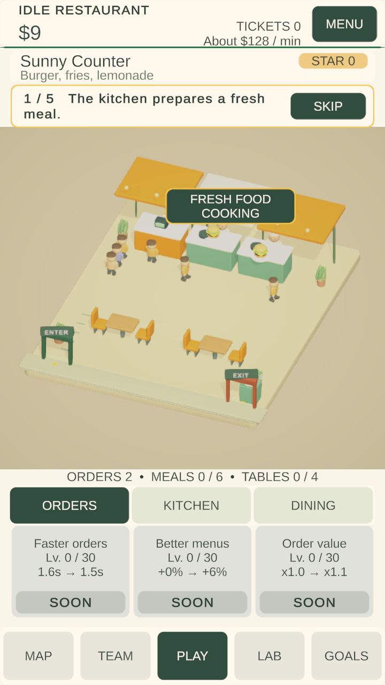
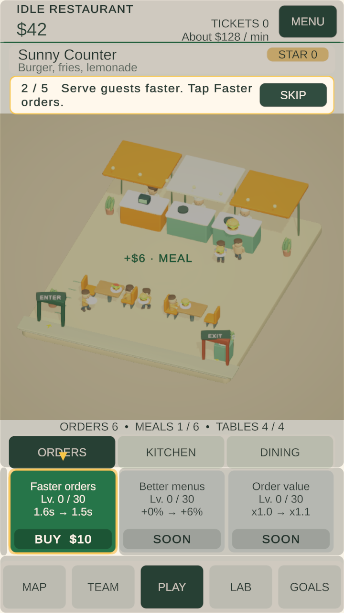
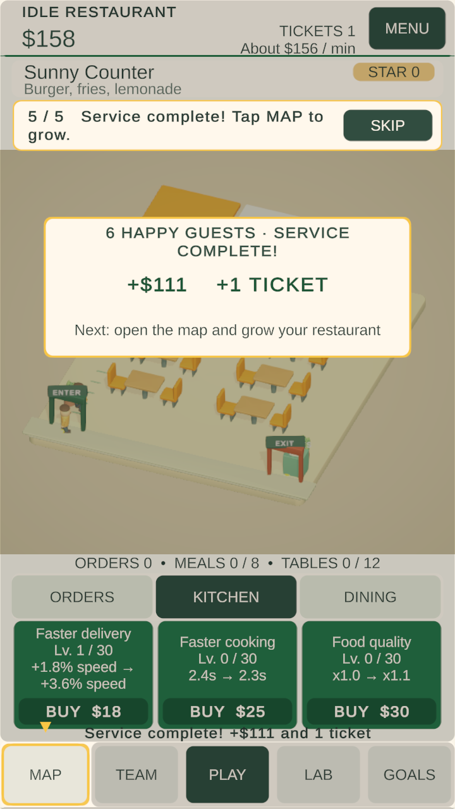

Focused implementation of the WellDiver-inspired experience review: contextual onboarding, camera/readability, upgrade feedback and service rewards. This is an incremental polish release; it does not claim that the wider production backlog is complete.
| Area | Implemented |
|---|---|
| Tutorial | First guest's activity drives five contextual explanations. In-world callouts identify arrival, ordering, preparation, meal collection and dining. Existing prompt fade/hide/reveal pattern and yellow highlights remain. A non-blocking spotlight isolates the relevant upgrade, Kitchen tab or Map. Skip and existing tutorial gates remain. |
| Camera and visuals | Gameplay viewport grows from 40% to 50% of the safe screen. Compact HUD, fitted camera bounds and 18% larger food models improve readability. Runtime material overrides separate the Street Kitchen floor, counters, furniture and seating without mutating replaceable art assets. Entrance and exit stay inside the fitted view. |
| Upgrades | Green affordable cards, grey unavailable cards and a separate darker green BUY price bar. A short result chip explains the benefit and a pointer identifies the relevant station. Exact effects remain visible on the card; presentation does not exaggerate a small statistical improvement. |
| Rewards | A non-blocking service card shows the completed guest count, actual credited bonus and earned ticket. It fades away automatically while gameplay continues. Small payment labels identify order, cooking and meal income. Service completion uses a separate chime. |
| Accessibility | Reduced motion preserves readable labels and feedback, removes floating payment movement and reward scale animation, and retains the static yellow tutorial highlight. |
24 checks passed; no runtime errors were reported during the final live run.
Fresh six-guest onboarding and a busy 22-guest service completed with all plate returns and exits. Peak entrance queue: 10. Actual UI raycasts exercised both guided purchases, Kitchen and Map navigation. First meal: 25.2 seconds; first service: 42.8 seconds; busy service: 81.75 seconds. These are observations of this Editor run, not phone performance measurements or a guarantee of identical frame-dependent movement timing.
Live verification · Byte-identical save restoration · Build evidence · APK verification
Silent live Editor recording, approximately 15 seconds. Source frames were encoded with their observed capture timings; this is gameplay, not an animated concept mockup.



Version 0.3.2 / code 5, Android 11+ (API 30), ARM64. The APK passes ZIP integrity and v2 signature verification, contains the new presentation code, and requests no billing or advertising-ID permission. It is debug-signed for testing. The build report total includes additional build outputs; AndroidArtifact.json records the actual APK file size and hash.
RestaurantExperience.cs centralizes the presentation layer. Select the Idle Restaurant Game object in the production scene to edit Experience: viewport height, spotlight opacity, feedback duration, reward duration and focus colour. The safe layout reserves a half-screen playfield; review UI spacing if changing its height. RestaurantPresentation.cs contains upgrade palette and guide transitions. Benefit text and world station anchors are grouped in RestaurantExperience. Dish scale is applied at the replaceable food model root in RestaurantServiceView. Shared art assets are retained. Use Restaurant → Verification → Verify doors tutorial and upgrade presentation in Play mode to rerun the checks; reports now go to Verification/Experience and historical Presentation reports are preserved.
No balance assets, income formulas, prices, payout rules, unlocks, save schema, service group sizes, ads or purchase systems were changed. Feedback presents rewards already credited by the simulation; it does not grant a second reward. Original on-disk saves were backed up and restored byte-for-byte. The first run's test-navigation failure is retained as InitialVerification.json; the final rerun passed after the test explicitly selected Orders before buying its upgrade.